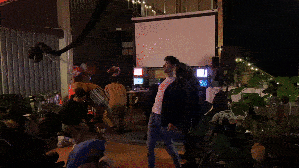
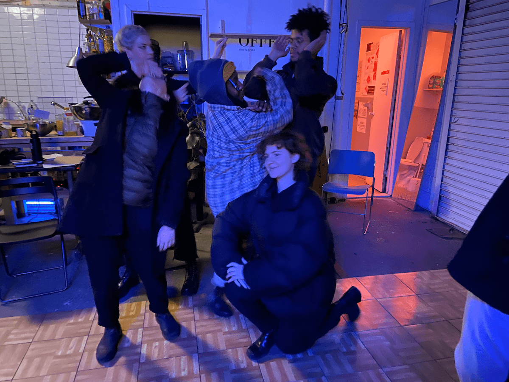
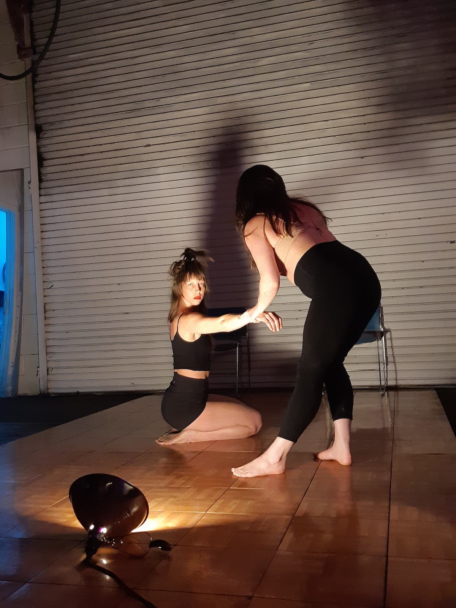

List 2-4 roles/positions/programs you identify with: creative, non-binary, lover
List 2-4 roles/positions/programs that are projected on you: black, girl/woman, available
Take note on how you behave this week:
My body and movement are something I am quite conscious of. Trauma oftentimes manifests in my body like pain. Sometimes it looks like walking really fast with tunnel vision to my destination while trying to draw the least amount of attention my way. Other times it looks like shortness of breath and eyes darting around rapidly.
Generally, I shy away from movement exercises and dance of any kind as it highlights these issues of mine, forcing me to think about a body that I sometimes wish did not exist, but regardless, I participated in this class anyway and found Fluct’s performance and the class to be extremely eye-opening.
Fluct began with a performance of their piece “everythingmakesmehappy.” The piece was set to a sound collage of media clips, many of which highlighted violence against women and exposed how “normalized” this violence is. Some samples were quite familiar and some a bit harder to recognize. All of them, however, were embodied and digested in the form of movement. And even though our class was observing this performance, because the piece was highlighting things that many of us feel and experience every day, it felt like we were all a part of it. It makes me think of the role an observer has in performance? But also in society? Sometimes this all blends together.
Their performance and then later our movement exercises followed these four formats:
Both the performances and movement exercises started here. Collectively we took part in a prayer / spell / intention by saying “I will not hurt myself, I will not hurt you, I will not hurt anybody else, & we are amazing.” After this, we partnered up and were instructed to close our eyes and sit with the back of our heads touching the back of our partner’s head. The goal was to connect our consciousness together by moving our heads/brains and listening through our bodies. It was amazing to experience just how much information you can get about another person by being connected to the head. Immediately it became important to focus on how to negotiate choices and decisions without the use of verbal cues as well. Our bodies hold a lot of information. What would happen if we listened to it more? What things are we negotiating in our everyday?
After writing down roles in society that feel projected onto us, we then re-enacted and embodied those roles in a group. In their performance, one way they processed their own projected roles was by embodying them and performing them to the extreme! This could look like embodying the role of a young daughter by throwing a tantrum and exclaiming “I don’t wanna go to bed” or it could be performing an exaggerated form of sexuality / projected ideals of sexuality. All of these synced up perfectly with the sound piece to increase its overall effect.
We as a class embodied roles such as American Citizen, Mirror, Daughter, Gardener, Token POC Friend and Partner.
By exploring first individually how we would fulfill these roles, we then came together in groups of three to four to create “family portraits.”
This exercise highlighted so much to me, particularly how our roles fluctuate and expand depending on context and who we are around, which was highlighted in the family portrait. Sometimes we shift our own roles, even the projected ones, to further accommodate and fit in within a group. Sometimes there is tension in that. Sometimes it works and looks cohesive and happy. Other times it is only chaotic.
The premise here was that “beauty doesn’t always equate to meaningfulness.” This was a statement we often came back to.
We discussed what the abject could be.
Abject = very bad / severe / disgusting / ugly
After exploring the abject, we then added this idea to the roles we were performing earlier. The abject is an interesting movement and processing tool, namely because it exposes the dark underbellies of society and how these projected roles and the resulting expectations are ones that are abject and absurd.
Gushing: attempting to fill the void
Gaping: exploding from the attempt
Glitching: resulting malfunctions + errors
This last exercise was truly transformative. It was interesting to explore these concepts and connect them to the everyday messages we hear and receive from society and ads. Currently, the messages targeted at us produce an effect of making us feel like we can never be fulfilled and that we always *need* something. These messages and society put expectations, ones that we cannot always live up to or don’t want to live up to because these labels are put on us oftentimes against our will. These expectations and roles often function as code. The impact of this code can sometimes result in glitches. These concepts are ones that we have been exploring since the beginning of the program but it felt different to embody them.
Movement then became a tool to:
make the connection between how codes live in our bodies.
emphasize the code.
attempt to extract and remove that code.
continue living post-glitch.
